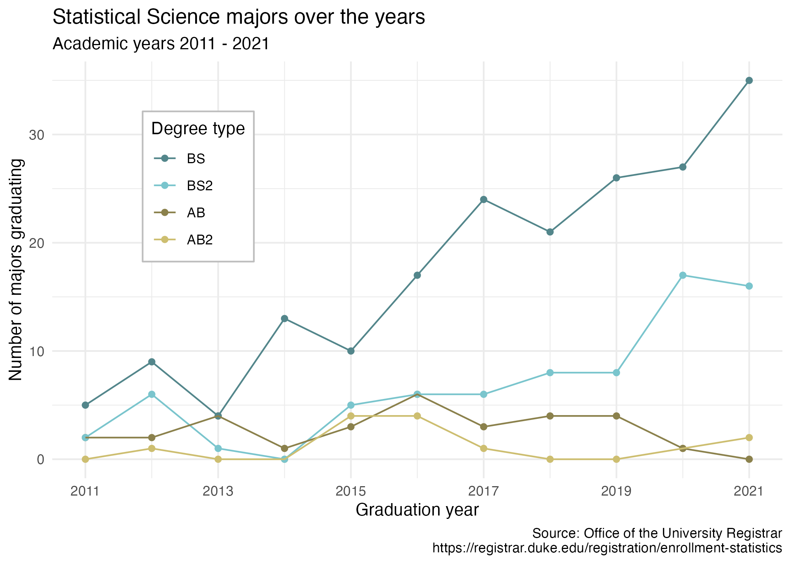
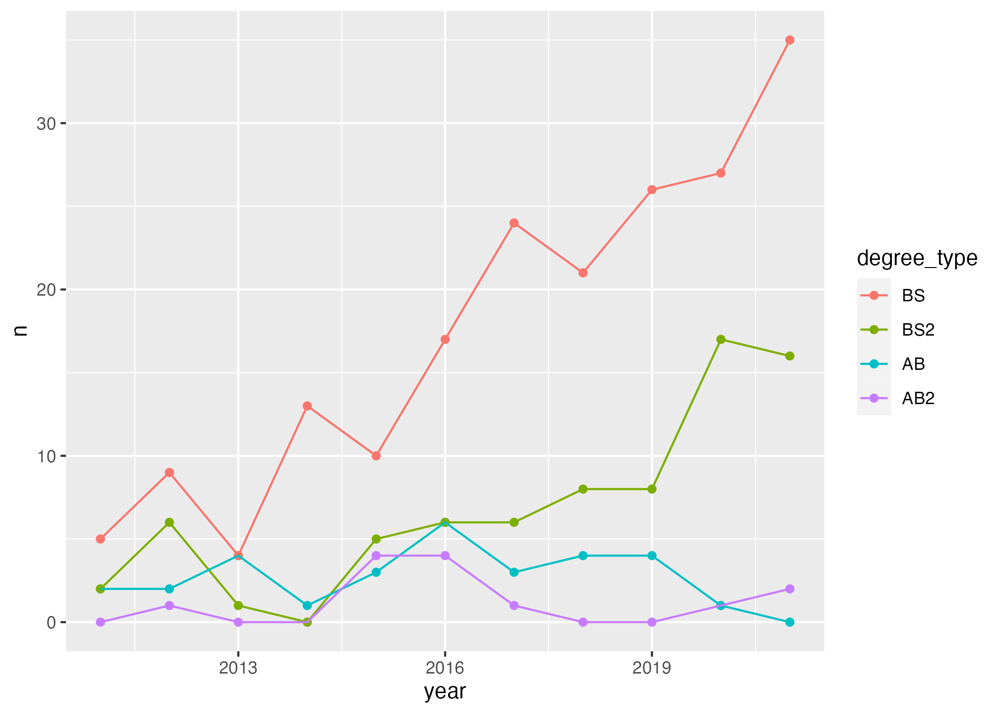

library(tidyverse)
statsci <- read_csv("data/statsci.csv")AE 07: Pivoting StatSci Majors
Goal
Our ultimate goal in this application exercise is to make the following data visualization.

- Your turn (3 minutes): Take a close look at the plot and describe what it shows in 2-3 sentences.
Add your response here.
Data
The data come from the Office of the University Registrar. They make the data available as a table that you can download as a PDF, but I’ve put the data exported in a CSV file for you. Let’s load that in.
And let’s take a look at the data.
statsci# A tibble: 4 × 12
degree `2011` `2012` `2013` `2014` `2015` `2016` `2017` `2018` `2019` `2020`
<chr> <dbl> <dbl> <dbl> <dbl> <dbl> <dbl> <dbl> <dbl> <dbl> <dbl>
1 Statist… NA 1 NA NA 4 4 1 NA NA 1
2 Statist… 2 2 4 1 3 6 3 4 4 1
3 Statist… 2 6 1 NA 5 6 6 8 8 17
4 Statist… 5 9 4 13 10 17 24 21 26 27
# ℹ 1 more variable: `2021` <dbl>The dataset has 4 rows and 12 columns. The first column (variable) is the degree, and there are 4 possible degrees: BS (Bachelor of Science), BS2 (Bachelor of Science, 2nd major), AB (Bachelor of Arts), AB2 (Bachelor of Arts, 2nd major). The remaining columns show the number of students graduating with that major in a given academic year from 2011 to 2021.
- Your turn (4 minutes): Take a look at the plot we aim to make and sketch the data frame we need to make the plot. Determine what each row and each column of the data frame should be. Hint: We need data to be in columns to map to
aesthetic elements of the plot.
Add your response here.
Pivoting
- Demo: Pivot the
statscidata frame longer such that each row represents a degree type / year combination andyearandnumber of graduates for that year are columns in the data frame.
# add your code here- Question: What is the type of the
yearvariable? Why? What should it be?
Add your response here.
- Demo: Start over with pivoting, and this time also make sure
yearis a numerical variable in the resulting data frame.
# add your code here- Question: What does an
NAmean in this context? Hint: The data come from the university registrar, and they have records on every single graduates, there shouldn’t be anything “unknown” to them about who graduated when.
Add your response here.
- Demo: Add on to your pipeline that you started with pivoting and convert
NAs innto0s.
# add your code here- Demo: In our plot the degree types are BS, BS2, AB, and AB2. This information is in our dataset, in the
degreecolumn, but this column also has additional characters we don’t need. Create a new column calleddegree_typewith levels BS, BS2, AB, and AB2 (in this order) based ondegree. Do this by adding on to your pipeline from earlier.
# add your code here- Your turn (5 minutes): Now we start making our plot, but let’s not get too fancy right away. Create the following plot, which will serve as the “first draft” on the way to our Goal. Do this by adding on to your pipeline from earlier.

# add your code here- Your turn (4 minutes): What aspects of the plot need to be updated to go from the draft you created above to the Goal plot at the beginning of this application exercise.
Add your response here.
- Demo: Update x-axis scale such that the years displayed go from 2011 to 2021 in increments of 2 years. Do this by adding on to your pipeline from earlier.
# add your code here- Demo: Update line colors using the following level / color assignments. Once again, do this by adding on to your pipeline from earlier.
“BS” = “cadetblue4”
“BS2” = “cadetblue3”
“AB” = “lightgoldenrod4”
“AB2” = “lightgoldenrod3”
# add your code here- Your turn (4 minutes): Update the plot labels (
title,subtitle,x,y, andcaption) and usetheme_minimal(). Once again, do this by adding on to your pipeline from earlier.
# add your code here- Demo: Finally, adding to your pipeline you’ve developed so far, move the legend into the plot, make its background white, and its border gray. Set
fig-width: 7andfig-height: 5for your plot in the chunk options.
# add your code here